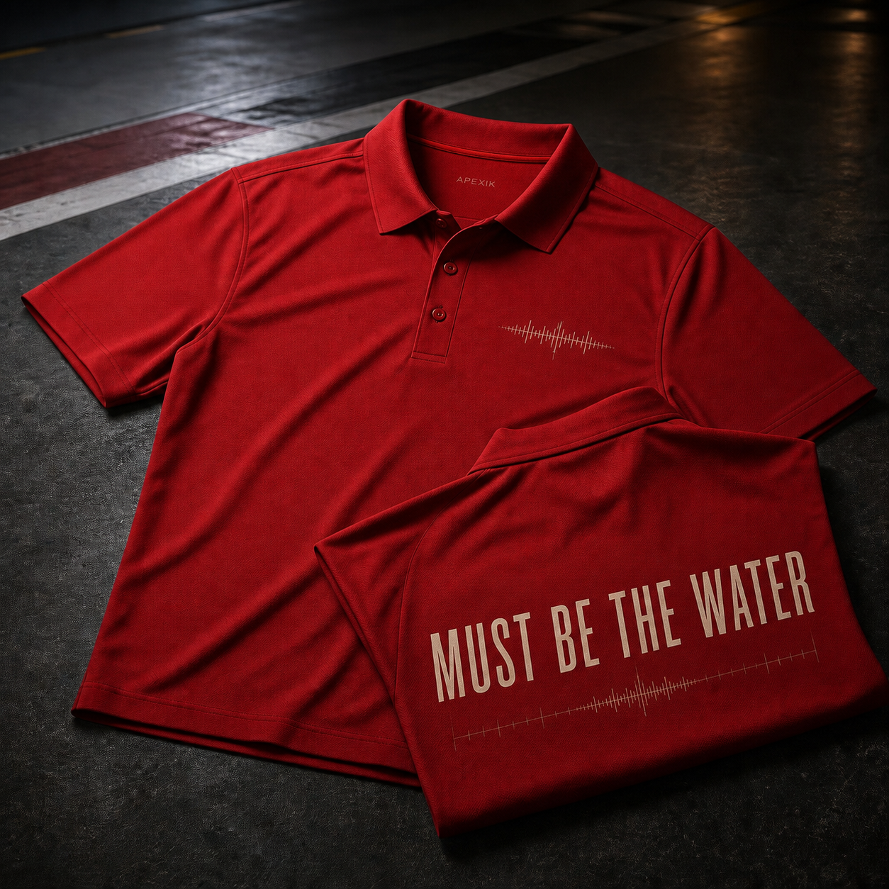

RADIO DROP 01 / RACING RED
Must Be the Water Radio Polo
$44.00
Unexpected pace. One very simple explanation. A restrained radio reference built for people who know the moment.
Free US shipping over $75Dispatches in 3–6 business days
Easy 30-day returnsUnused items can be sent back within 30 days.
01 / THE RADIO MOMENT
The call that
changed the lap.
A lightweight technical polo translating an unexpectedly funny radio explanation into clean contemporary apparel. The front stays quiet with a small audio trace; the back carries the full radio moment.
Radio wave detail
A quiet reference for people who know the moment without needing a team crest.
Technical pique
Selected for breathability, shape retention, and race-weekend comfort.
Built for the full weekend
Easy from the garage to the stands and everywhere between sessions.
Fit & care
Relaxed unisex fit; planned XS–3XL.
92% recycled polyester, 8% elastane technical pique.
Cold wash inside-out; line dry; do not iron print.
Delivery & returns
Most orders dispatch within 3–6 business days. Tracking is emailed when your parcel leaves.
Yes. Unused products can be returned within 30 days of delivery.
No. APEXIK is an independent racing-radio culture brand.
02 / RADIO DROP 01
More from the channel.


Everything under $50Radio-quote goods that do not miss.
Independent designOriginal artwork. No sponsors, no noise.
Built for race weekendsFor the garage, stands, and beyond.
Easy 30-day returnsNo hassle on unused items.